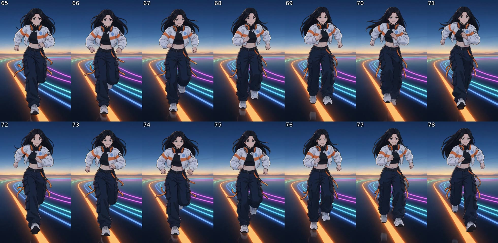
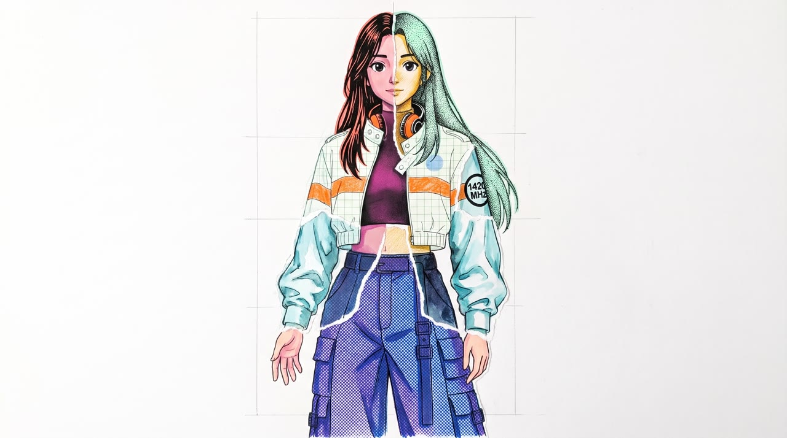
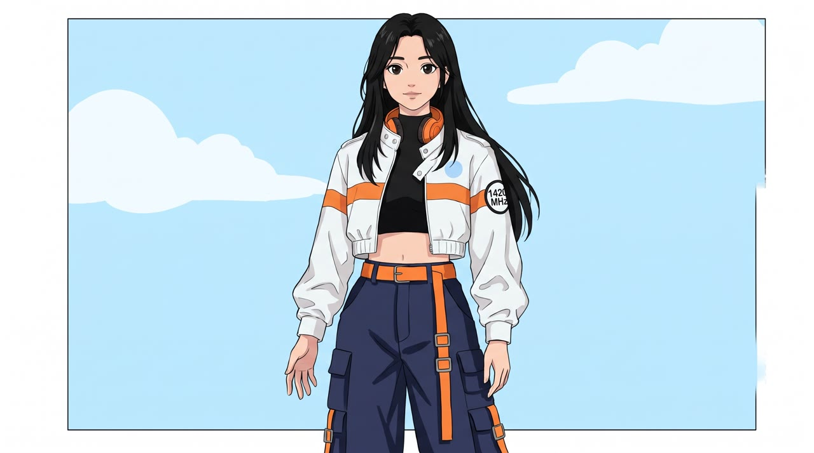
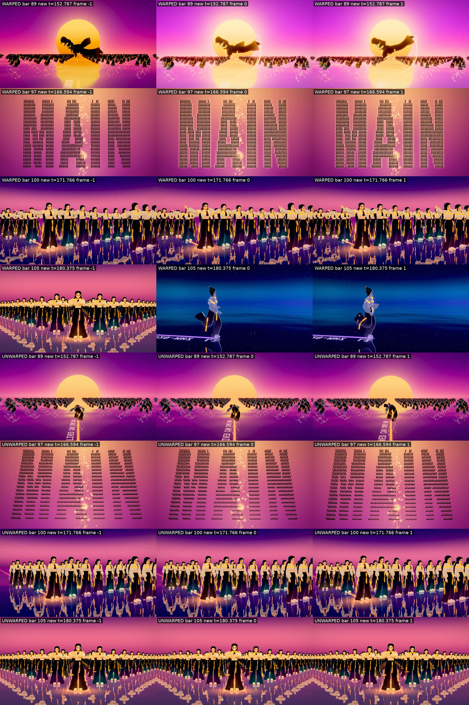
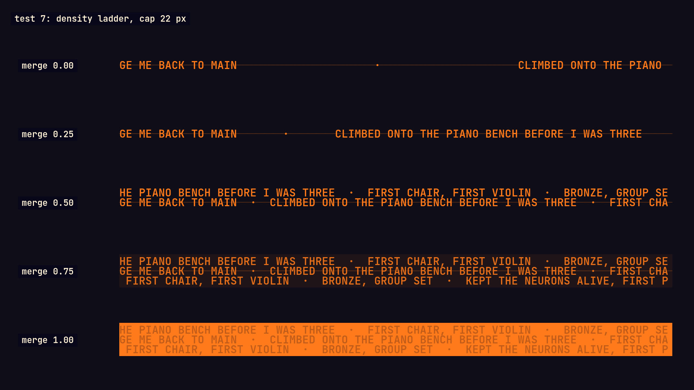
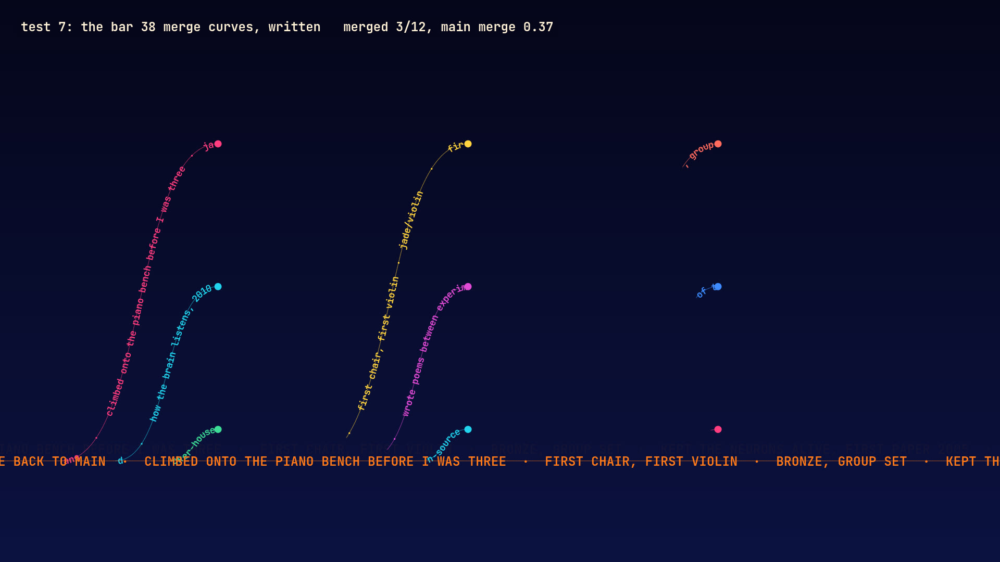
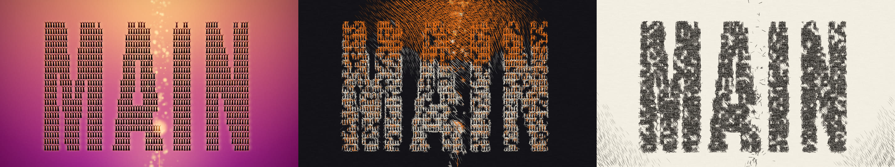
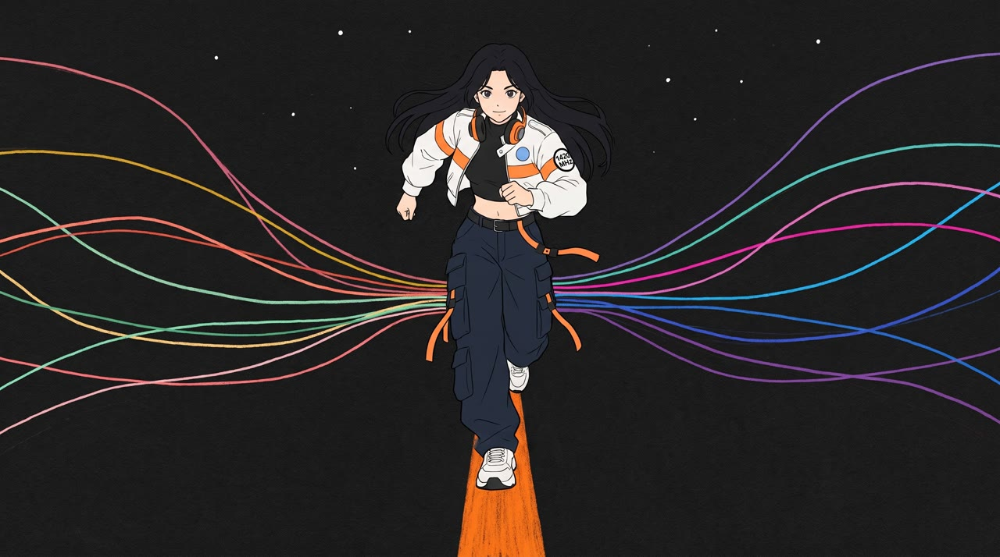
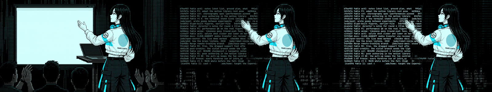

Merge, take two: Step 0 test results
2026-11-13. The ten tests of plan section 9, plus the diagnosis of the running-shot discontinuity. Nothing here has been watched at speed with sound by anyone: every verdict below comes from stills, strips and measurements. Please play the clips.
Summary
| Test | Verdict | What it means for the plan |
|---|---|---|
| Running-shot discontinuity | Diagnosed | It is in the generated clip, not the compositor: she takes the same step twice. Replace the clip; gait is now measured on every running clip. |
| 1. Patchwork Jade | Works | One figure in many mediums reads as one woman, and the settle into clean cel animates. The face needs a closer match to the sheet. |
| 2. Runner kit | Half works | Cut-outs hold on pencil and on pixel art, in motion. But the video model zooms in until her feet leave the frame, so the kit needs stills with more margin. |
| 3. Sung insert | Your call | She sings the line in both versions. The expression is pained in both, which is wrong for this moment, and the jacket version slims her face. Sync was not measured reliably; four lag variants each are ready for your ear. |
| 4. Crossing | Works | She runs into the doorway and the doorway grows into the life's plate. |
| 5. v7 re-timed | Works | The whole of v7 now renders on the new song's timing with its own type and HUD off. Its lyrics written along the roads are still in the picture. |
| 6. On twos | Done before | You saw no big difference; decided per shot. |
| 7. Written lane | Works | Readable from sparse to solid, and along the merge curves. |
| 8. Paper pass | Black paper works, white does not yet | Gold on black holds the kick and the crowd. On white paper the image falls apart. Both still look partly like a filter. |
| 9. Main on paper | Works | Flat cel on black paper, even stride. First take wrote RARE EARTH on her chest; fixed in the retake by a prompt change now applied to every clip. |
| 10. Glyph pass | Works on a still | The open-source stage screen shows real lines from this repo's git log. The audience reads weakly. Not yet seen moving. |
Spend. This step: $11.61 (9 stills, 9 clips). Project total: $399.45 of the $600 cap; about $200 left.
The discontinuity in the running shot
You noticed a small jump at the end of the proof. I checked the source clip frame by frame. Her stride repeats every 14 frames until frame 65; then frames 65 to 71 and frames 72 to 78 are the same step: the same foot lands twice. That is 2.7 to 3.2 s into the clip, 72.4 to 72.9 s in the song, half a second before the proof ends.

The on-twos version shows half the frames, which is why it hides the jump better. Separately, the proof cross-blended 24 fps frames into 30 fps, which made sharpness pulse six times a second (measured: every fifth frame is sharp, the four between are blends). That is not the jump you saw, but it softens fast legs, so the new compositor shows the nearest frame and blends only when a clip is slowed.
The replacement clip (test 9) was measured the same way: its stride stays at 14 to 16 frames throughout, with no repeated step.
1. Patchwork Jade works
The poster frame for "Every life I've lived, I have become", and its settle into the clean, fully coloured Jade.


- Costume: patch on her left arm, one chest band, no lettering on the front. The resolved still gave her an orange belt (the sheet's is black) and a drawn border; both to be fixed in the real plate.
- The face is a generic anime face, not yet the sheet's. The real plate will be built from an approved main-Jade still so the face is hers.
- She is small in the frame; the real plate will be closer.
2. Runner kit half works
Two runners, coloured pencil and pixel art, cut out and placed over a ground with their written lanes.
- The cut-outs are clean on both mediums in every frame I checked, hair included.
- The video model pushed in on both clips, so her legs leave the frame. The stills need a smaller figure with more margin.
- First takes wrote RARE EARTH on her side and moved the patch between arms as she twisted. The pencil retake (shown) fixes that with a prompt change. The pixel runner shown is still the first take and still has those faults, plus a mint mark on the jacket back that breaks your no-stripe rule. It would not be used.
3. Sung insert, "Back to main" your call
These clips contain your likeness, so they are on this machine only and are not committed to the public repo. Folder: review/fable_take2/step0/likeness_local/.
A. Your traced likeness redrawn in the Merge jacket, in daylight.
B. The approved Orbital Sunrise trace itself, unchanged.
- Both sing the line and hold "main" for about three seconds.
- Both look pained: furrowed brows. The plan asks for tender and euphoric. A retake would ask for an open, glad face.
- A slims and evens your face compared with the trace. B is your approved drawing, but it has pink headphones, a tight selfie framing and no Merge jacket.
- My automatic lip-sync measurement did not work on these drawings, so sync is unmeasured. Lag variants for each:
like_a_lag-80.mp4,lag0,lag80,lag160(picture later by that many milliseconds), and the same for B.
4. Crossing works
Bars 21 to 22. A branch Jade in flat cel runs her lane to a doorway; the doorway grows to fill the frame and the picture is her life in its own medium.
- Jacket back: plain white, blue circle, RARE EARTH, no stripe. Mint bands. Patch on her left arm.
- This composite was made with a quick script; the film compositor will redo the wipe and add the written lane.
- The lab plate shows a dark edge on its right side for one frame as the doorway opens; to be cropped.
5. v7 re-timed to the new song works
The drop, bars 88 to 105, rendered through the old-to-new time map with v7's lyric type and HUD off.

- Top row re-timed, bottom row not. Re-timed, the cut to night lands on the bar 105 downbeat frame. Without the map v7 is 380 ms out at the drop and 617 ms out by bar 105.
- The whole film is rendered this way as plates (8,484 frames, 1080p).
- v7 writes some lyrics along its roads as part of the picture. Those are still there and will need hiding or covering where they clash with the new type.
6. On twos done
Already in review/fable_proof/: merge_proof_r2_1080p.mp4 beside merge_proof_r2_on_twos_1080p.mp4. You saw no big difference, so it is a per-shot choice.
7. Written lane works


The lane text is your commit messages. Text is 22 px cap height here, just under the 24 px rule for labels; it will be raised for close shots.
8. Paper pass black paper works, white does not yet
v7 frames redrawn as strokes on paper. Left to right: v7, black paper, white paper.

- Gold on black keeps the kick, the sun and the crowd, and gives the two-colour sunrise the plan asks for.
- On white paper the sun and the figure nearly vanish. MAIN from above reads on both.
- It still looks partly like a filter over CG. It is acceptable for silhouettes and crowds; I would not put it on a close figure.
- It runs slower than hoped, which matters only for render time.
9. Main on black paper works
The chorus hero redone as flat cel on black paper, to replace the neon version.

- Patch on her left arm, one chest band, blue dot, orange headphones. No lettering on the chest in this take.
- Even stride, no repeated step (measured).
- The orange line under her feet from the still does not survive in the clip; the code will draw main as a written lane there anyway.
- The drawn coloured lines stand in for lanes; in the film they would be written lanes.
10. Glyph pass works on a still
The open-source plate. Left: the image model's imitation. Right: the engine's glyph pass, every character real, her figure untouched.

- The screen carries real lines from this repo's
git logand your commit messages. - The audience is hard to read as people. A moving version was still rendering when this page was written.
What I would change in the plan because of these tests
- Every clip prompt now names where lettering may appear for that view. Saying "RARE EARTH stays as drawn" made the model write it on the front.
- Every running clip gets the gait measurement before it is accepted.
- Runner kit stills: smaller figure, more margin, and judged again before the other eleven are made.
- Paper pass on black paper only, for now. Day scenes from v7 need another approach or stay as night and sunrise silhouettes.
- The sung insert needs your decision on which likeness (A or B, or B redrawn with the Merge jacket) and a retake for expression.